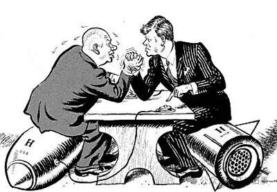
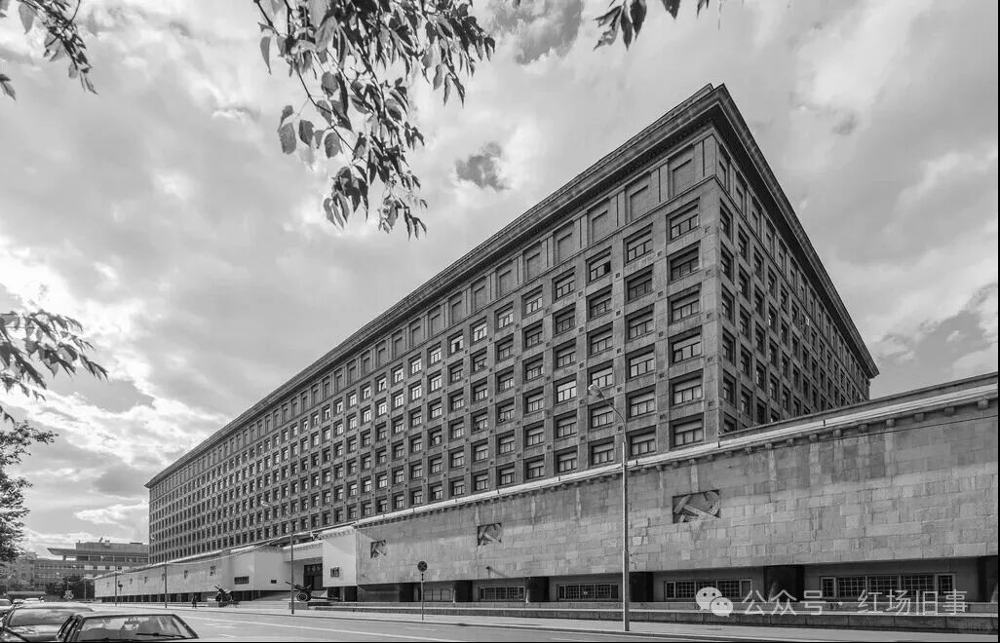
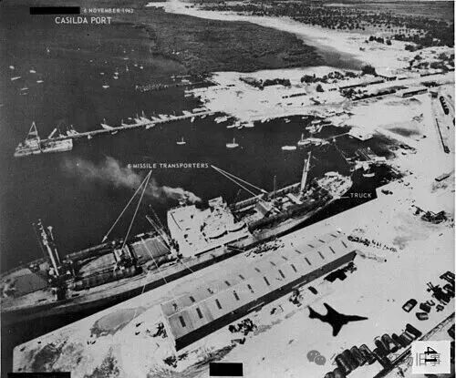
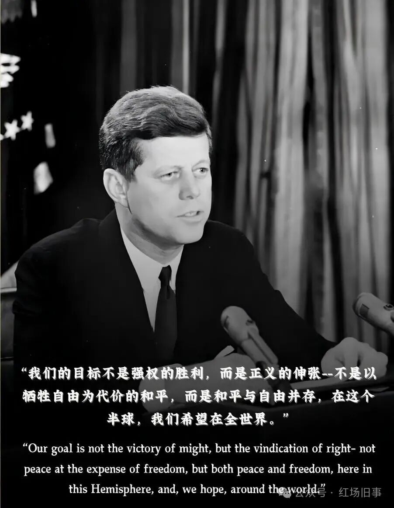

楔子：1963年莫斯科处决场的枪声1963年5月，莫斯科卢比扬卡监狱的地下室，一个44岁的男人被带进刑场。枪声响起，他的尸体被匆匆处理，没有墓碑，没有墓地，甚至连死亡日期都没有准确的官方记录。这个叫奥列格·潘科夫斯基的人，从此从苏联的历史中“被消失”。但在此前一年，他的名字曾是整个西方情报界的最高机密。

1962年10月，古巴导弹危机爆发，世界距离核战争只有一步之遥。肯尼迪总统之所以敢对赫鲁晓夫强硬到底，是因为他手里握着一张底牌，潘科夫斯基提供的苏联核实力“家底”。这个苏联上校，为何成为美国的“救命恩人”？他的背叛，是阻止了核战，还是差点引爆了它？
一、背叛根源：出身与失望的双重驱动
潘科夫斯基生于1919年，他的父亲是一名参加过白俄军队的旧军官，在潘科夫斯基仅4个月大时就被红军击毙。这个出身成了他一生都洗不掉的污点。他1937年加入苏联红军，二战中浴血奋战，1944年负重伤。战后进入伏龙芝军事学院，1949年转入格鲁乌（苏军总参谋部情报总局），一路晋升至上校。1960年，他担任国家科委外事处副处长，职责是收集西方国家的科技情报。然而就在此时，他突然被降职。他怀疑是军方上司发现了他的家庭背景，认为自己再无晋升希望。

伏龙芝军事学院但同时也有对赫鲁晓夫体制的彻底失望。据西方情报机构后来的分析，潘科夫斯基目睹了苏联军队内部的腐败、核实力的虚张声势，以及赫鲁晓夫在国际舞台上的鲁莽冒险，逐渐对体制失去了信心。1960年8月12日晚，他在莫斯科街头将两封信塞给两个路过的美国学生，信中写道：“我叫潘科夫斯基，我想为美国工作。”
二、关键情报：5000份机密与古巴导弹危机
从1961年4月到1962年8月，潘科夫斯基向美英情报机构传递了至少5000份有关苏联军事、政治和经济的绝密文件照片。这些情报的价值有多高？第一，他揭示了苏联核实力的真相。当时赫鲁晓夫在外交场合吹嘘“苏联制造核武器就像生产香肠一样容易”。但潘科夫斯基的情报显示：苏联的洲际导弹数量远少于美国，射程也大打折扣，根本没有能力对美国本土构成实质性威胁。他还提供了导弹发射井的建设计划、核武器部署地点的地形图。第二，他提前暴露了苏联在古巴部署导弹的计划。潘科夫斯基的情报让中情局清楚地知道：赫鲁晓夫正悄悄将导弹运往古巴，目的是制衡美国在土耳其、意大利部署的核武器。

1962年10月，U-2侦察机根据这些情报准确发现了古巴境内的导弹基地。肯尼迪之所以敢于宣布“武装封锁古巴”，并强硬要求苏联撤走导弹，正是因为他手里握着潘科夫斯基提供的底牌：苏联根本没有胆量与美国开战。中情局高级分析师后来评价：潘科夫斯基的情报使中情局能够“按小时追踪苏联在古巴部署导弹的进度”。
三、暴露真相：接头疏忽与克格勃收网
潘科夫斯基的暴露，始于接头时的致命疏忽。他的主要联络人是英国驻莫斯科大使馆情报官的妻子珍妮特·奇肖姆。潘科夫斯基经常在公园里假装逗她的孩子玩，趁机将装有情报胶片的糖果塞进孩子的口袋。但克格勃早就在监视珍妮特。不过一开始，克格勃并没怀疑潘科夫斯基，他们以为他是在执行格鲁乌的“合法间谍任务”。直到后来秘密搜查他的公寓，才发现了叛变的确凿证据。1962年10月22日，就在肯尼迪发表电视演讲的当天，潘科夫斯基在莫斯科被捕。

1962年10月22日-古巴导弹危机肯尼迪电视演讲
但更惊险的剧情还在后面。潘科夫斯基曾与中情局约定一个“紧急信号”：如果他得知苏联即将向美国发射核导弹，就通过无线电发出特殊信号，中情局收到后会“先发制人”核袭苏联。被捕后，自知必死的潘科夫斯基竟生出与祖国同归于尽的恶念。他将发送“紧急信号”的方法告诉克格勃，却隐瞒了信号的真实含义，谎称是普通联络方式。他指望克格勃特工将信号发出去，引发美苏核战。克格勃半信半疑地试发了信号。中情局莫斯科联络官收到后大惊失色，但还没来得及向总部发出“核袭警报”，就被冲进来的克格勃逮捕。如果这名联络官早几分钟发出警报，古巴导弹危机可能真的是另一个结局了。他的中情局上司后来确信：“潘科夫斯基希望我们接到信号后，能先发制人轰炸莫斯科和其他城市。”
四、历史拐点：核战真的会爆发吗？
如果没有潘科夫斯基，核战是否真的会爆发？历史学家普遍认为，潘科夫斯基的情报是古巴导弹危机和平解决的关键因素之一。但关于他的历史定位，至今存在激烈争议：一方认为他是“和平英雄”。他的情报让肯尼迪看清了赫鲁晓夫的真实底牌，避免了因误判而引发的核战争。中情局资深分析师雷·克莱因告诉历史学家：潘科夫斯基的情报对危机解决“至关重要”。另一方认为他是“报复性叛国者”。他背叛的动机更多源于个人仕途受阻和对体制的怨恨，而非对和平的追求。被捕后试图用“紧急信号”引发核战的行为，更是暴露了他内心深处与祖国同归于尽的毁灭欲。潘科夫斯基在1963年5月被苏联最高人民法院以叛国罪判处死刑。关于他的死法，有两种说法：官方宣布是枪决。但另一种说法是，克格勃用钢琴丝将他绑在木板上活活焚烧，尸体从未被找到。1965年，《潘科夫斯基文件》在美国出版，据称是他的日记，但真实性至今存疑。
互动推理
潘科夫斯基的背叛，是20世纪最复杂的情报事件之一。他的命运向每个后来者提出一个问题：你认为潘科夫斯基是“和平英雄”还是“叛国者”？欢迎在评论区分享你的想法。下一期预告：卫星计划泄密案——毒瘾引发的情报灾难1977年，美国加州。两名年轻人因吸毒过量被捕，却在审讯中抖出一个惊天秘密：他们刚刚向苏联出售了美国最先进的KH-11侦察卫星技术手册。这本手册详细描述了美国“锁眼”卫星的光学系统、数据传输方式——相当于把中情局的眼睛，直接送给了克格勃。是毒瘾导致的临时起意，还是克格勃精心设计的“诱饵陷阱”？下期，走进那场让中情局蒙羞的泄密案。第6期 1949年苏联核爆震惊世界：谁偷走了曼哈顿计划的密码？第5期 从东京到莫斯科：那条改变二战进程的情报第4期 潜伏三年，一镐毙命：那个终结“红军之父”的神秘刺客